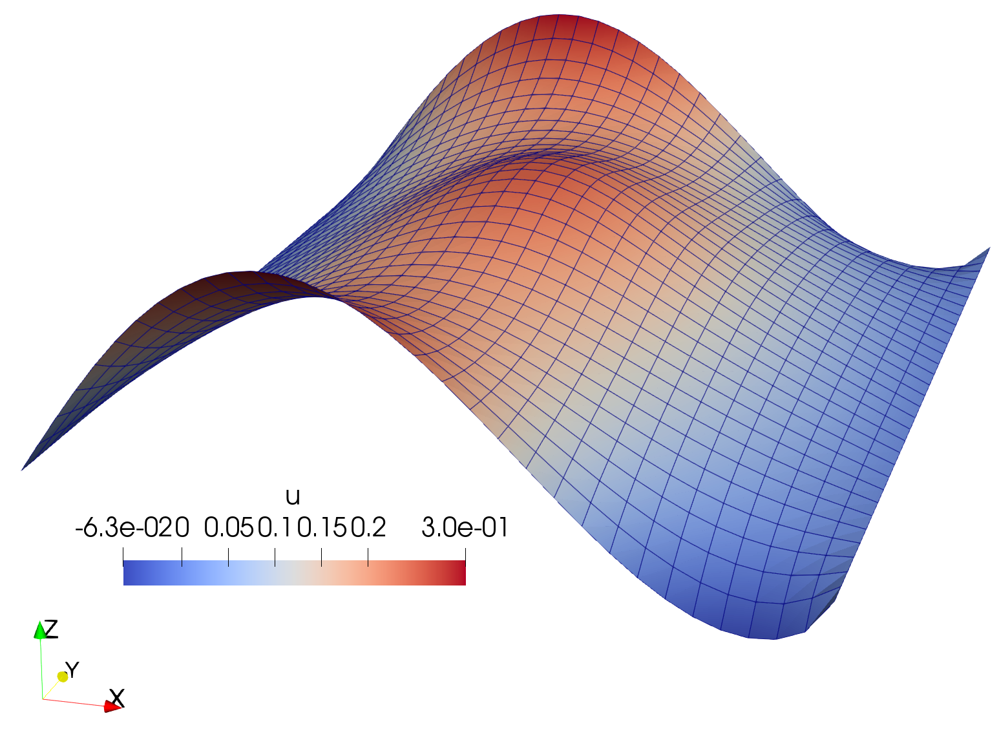

Poisson equation#
Problem definition#
The Poisson equation, as a classical elliptic partial differential equation (PDE), governs equilibrium or steady-state diffusion processes across various physical phenomena. This example presents a computational framework for solving the boundary value problem of the Poisson equation using JAX-FEM, with particular focus on the two-dimensional domain \(\Omega=(0,1)\times(0,1)\) under prescribed boundary conditions. Consider a domain \(\Omega \subset \mathbb{R}^d\) with boundary \(\partial\Omega = \Gamma_D \cup \Gamma_N\), the strong form gives:
where zero-valued Dirichlet boundary conditions are applied on the left and right sides, while Neumann boundary conditions with \(t = \sin(5x_1)\) are imposed on the remaining top and bottom sides. We have the following definitions:
\(\Omega = (0,1) \times (0,1)\) (a unit square)
\(\Gamma_D = \{0\} \times (0,1) \cup \{1\} \times (0,1) \subset \partial\Omega\) (Dirichlet boundary)
\(\Gamma_N = (0,1) \times \{0\} \cup (0,1) \times \{1\} \subset \partial\Omega\) (Neumann boundary)
\(t = \sin(5x_1)\)
The source term \(b\) is set as:
We first derive the weak form by multiplying both sides of the governing equation by a test function \(v\):
Applying the divergence theorem:
For the Dirichlet boundary \(\Gamma_D\), we have \(v = 0\). Substituting the Neumann boundary conditions, we obtain the final weak form:
Implementation#
In JAX-FEM, we only need three steps (weak form, mesh, boundary conditions) to solve the above problem. We first import some necessary modules:
[ ]:
# Import some generally useful packages.
import jax
import jax.numpy as np
import os
# Import `jax_fem` specific modules.
from jax_fem.problem import Problem
from jax_fem.solver import solver
from jax_fem.utils import save_sol
from jax_fem.generate_mesh import get_meshio_cell_type, Mesh, rectangle_mesh
Weak form#
We can define our problem subclass based on the Problem base class according to the above weak form. A key concept to define the weak form in JAX-FEM is the kernel, which enables us to write codes in a more general and efficient manner. This concept also appears in many other open-source finite element software (such as Moose). JAX-FEM currently includes multiple kernel types for computing volume and surface integrals.
For the volume integrals, we can use:
Laplace Kernel
\[\int_\Omega f(\nabla u, \theta) \cdot \nabla v\, dx\]Mass Kernel
\[\int_\Omega g(u, \boldsymbol{x}, \theta) v\, dx\]
where \(u\), \(\boldsymbol{x}\) and \(\theta\) are the solution, position and parameter, respectively.
For the surface integrals, we can use:
Surface Kernel
\[\int_\Gamma t(u, \boldsymbol{x}, \theta)v\, ds\]
Note that we also have more advanced possible kernels to handle more general situations:
Universal Kernel (more general weak form definition, commonly used for multi-physics coupling problems)
Universal Surface Kernel (more general surface integral definition)
[ ]:
# Define the weak form.
class Poisson(Problem):
# The function 'get_tensor_map' overrides base class method. Generally, JAX-FEM
# solves -div.f(u_grad) = b. Here, we define f to be the indentity function.
# We will see how f is defined as more complicated to solve non-linear problems
# in later examples.
def get_tensor_map(self):
return lambda x: x
# Define the source term
def get_mass_map(self):
def mass_map(u, x):
val = -np.array([10*np.exp(-(np.power(x[0] - 0.5, 2) + np.power(x[1] - 0.5, 2)) / 0.02)])
return val
return mass_map
# Define the surface integral
def get_surface_maps(self):
def surface_map(u, x):
return -np.array([np.sin(5.*x[0])])
return [surface_map, surface_map]
Notice that there are three terms in the weak form, and they are handled by the three kernels, respectively.
The get_tensor_map method defines the identity mapping \(f(\nabla u)=\nabla u\) for the Laplace kernel, implementing the standard diffusion term \(\int_\Omega \nabla u \cdot \nabla v \, dx\).
The get_mass_map method specifies the source term \(g(u,\boldsymbol{x}) = -b\) for the Mass kernel, implementing the source term \(-\int_\Omega bv \, dx\).
The get_surface_maps defines the Neumann boundary conditions \(t(u,\boldsymbol{x}) = -t\) for the Surface kernel, implementing the surface term \(-\int_{\Gamma_N} tv\, ds\).
Mesh#
JAX-FEM uses meshio to read and convert mesh data. For the simple mesh model of a unit cube in this example, we can directly use box_mesh_gmsh function from the jax_fem.generate_mesh module to generate a structured QUAD4 mesh. For other more complex mesh models, the geometry can first be created and meshed using specialized preprocessing or commercial software. After meshing, the data can be exported as a mesh file and then imported using meshio. For details on how to import
external meshes, you can refer to this advanced example.
[ ]:
# Specify mesh-related information.
# We make use of the external package 'meshio' and create a mesh named 'meshio_mesh',
# then converting it into a JAX-FEM compatible one.
ele_type = 'QUAD4'
cell_type = get_meshio_cell_type(ele_type)
Lx, Ly = 1., 1.
meshio_mesh = rectangle_mesh(Nx=32, Ny=32, domain_x=Lx, domain_y=Ly)
mesh = Mesh(meshio_mesh.points, meshio_mesh.cells_dict[cell_type])
Boundary conditions#
For Dirichlet boundary conditions defined on \(\Gamma_D\), we need to specify them from three aspects:
location_fns: functions that identify the nodes to assign boundary conditions,
vec: which component of the solution is being constrained,
value_fns: functions that define the boundary values applied on these nodes.
[ ]:
# Define boundary locations.
def left(point):
return np.isclose(point[0], 0., atol=1e-5)
def right(point):
return np.isclose(point[0], Lx, atol=1e-5)
def bottom(point):
return np.isclose(point[1], 0., atol=1e-5)
def top(point):
return np.isclose(point[1], Ly, atol=1e-5)
# Define value functions.
def dirichlet_val_left(point):
return 0.
def dirichlet_val_right(point):
return 0.
location_fns_dirichlet = [left, right]
value_fns = [dirichlet_val_left, dirichlet_val_right]
vecs = [0, 0]
# Define Dirichlet boundary information.
# On the 'left' side, we apply 'dirichlet_val_left' to the 0 component of the solution variable;
# on the 'right' side, we apply 'dirichlet_val_right' to the 0 component of the solution variable.
dirichlet_bc_info = [location_fns_dirichlet, vecs, value_fns]
For Neumann boundary conditions, we need to specify:
location_fns: functions that identify the boundary nodes where surface integrals will be evaluated.
[ ]:
# Define Neumann boundary locations.
# This means on the 'bottom' and 'top' side, we will perform the surface integral
# with the function 'get_surface_maps' defined in the class 'Poisson'.
location_fns = [bottom, top]
Problem#
We have completed all the preliminary preparations for the problem. Then we can proceed to create an instance of our problem:
[ ]:
# Create an instance of the Class 'Poisson'.
# Here, 'vec' is the number of components for the solution, and 'dim' is the spatial dimension.
problem = Poisson(mesh=mesh, vec=1, dim=2, ele_type=ele_type, dirichlet_bc_info=dirichlet_bc_info, location_fns=location_fns)
Solver#
The instance is then passed to solver function to solve the defined problem using the Newton-Raphson method defined in jax_fem.solver.solve function.
[ ]:
# Solve the problem.
# solver_options can be changed for other linear solver options
sol = solver(problem)
The default solver is the Bi-Conjugate Gradient Stable iteration solver in jax. You can also change the solver to PETsc or UMFPACK wrapped in scipy and specify the options. For example:
[ ]:
## scipy.sparse.linalg.spsolve
# sol = solver(problem, solver_options={'umfpack_solver': {}})
## PETSc
# sol = solver(problem, solver_options={'petsc_solver': {'ksp_type': 'bcgsl', 'pc_type': 'ilu'}})
If you have a personal implementation of the linear equation solver, you can also set the solution function in the solver_options to use it, see the linear elasticity example for details.
Postprocessing#
The solution can be exported to VTK format files (readable by ParaView and other post-processing software) using the built-in function save_sol:
[ ]:
# Save the solution to a local folder that can be visualized with ParaWiew.
data_dir = os.path.join(os.path.dirname(__file__), 'data')
vtk_path = os.path.join(data_dir, f'vtk/u.vtu')
save_sol(problem.fes[0], sol[0], vtk_path)

Solution to the Poisson’s equation.
Please refer to this link to download the source file.